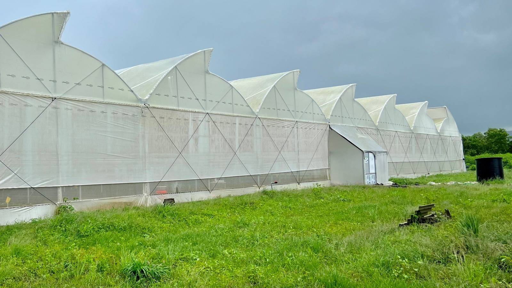

ABOUT BHAWANA BIOTECH
Bhawana Biotech Pvt. Ltd. is an agricultural technology and consultancy firm headquartered in Lucknow, Uttar Pradesh.
At GrowthFarm, we develop and manage agricultural/farming assets, which include the farmland and the farming operations conducted on it. Our business activities cover livestock, cropping, horticulture, and market linkages. We also assist farmers in the agriculture sector. It includes entry strategy, strategic agricultural portfolio development, best practices of agricultural and farming operations and exit mechanisms to maximize returns. At GrowthFarm, we lay major emphasis on the techniques and proper mechanisms for farming. Providing good quality seeds, manure and a focus on organic farming promotion for long term sustenance.
Take a look at our round up of the best shows.
It has survived not only five centuries.